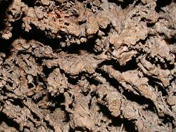
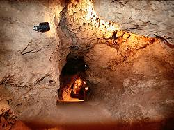

Tufa Caves


Tufa is a material that has formed in quite recent times, over the last few millennia. It forms only in the vicinity of karst springs which discharge water with a very high calcium carbonate content. Once the water reaches the surface, CO2 escapes into the air or is consumed by organisms. The water can no longer keep the calcium carbonate in solution, so it precipitates.
The deposition of the calcium carbonate leads to the formation of porous, tuff-like rock. This distinctive feature (in contrast to the sinter deposits found in caves) is a result of the drastically different conditions of formation on the Earth’s surface. Organic material such as algae, mosses, leaves, twigs or animal carcasses is coated with calcium carbonate and thus incorporated. The organic material often decomposes later, leaving detailed imprints preserved in the calcium carbonate.
As algae and mosses grow, they extract CO2 from the water through photosynthesis, thereby causing the precipitation of limestone, which leads to their rapid calcification. A race ensues between growth and calcification.
Lime deposits accumulate more heavily at the edges of watercourses or on ledges or obstacles within them. Steps form, weirs, lakes and, in rarer cases, water channels, often referred to as stone channels. Waterfalls such as the Urach Waterfall build up their own ledge, which eventually protrudes too far and breaks off.
The formation of Tufa Caves
Terraces that are flooded to a certain depth tend to form overhangs and semi-caves. No further tuff is deposited beneath the overhangs, as the water no longer reaches this area. However, if the overhang extends too far, a collapse may occur. In rare cases, the overhang remains in place until sufficient calcareous tuff has also been deposited on the other side, usually mixed with debris from the overhang.
Such a step in the Echaz Valley led to the formation of the Olga Cave. This is also evident from the fact that the cave runs perpendicular to the valley.
If a cavity forms during the formation of a rock, it is called a primary cave, as the cave forms at the same time as the rock. A tuff cave is therefore a primary cave.
Economic use of tuff deposits
Large deposits of calcareous tuff were formerly quarried for use as building stones, as this rock has a number of advantages. Whilst still damp, it is so soft that it can even be cut with saws. This eliminates the laborious process of breaking and hewing that is necessary with harder rocks. In Honau, the calcareous tuff was quarried using a pickaxe-like Krählhaue and wedges, and then cut into blocks measuring 80 x 30 x 30 cm using hand-operated frame saws operated by two people.
However, once the tuff has dried in the air and sun, it becomes hard enough to be used as a building block. Furthermore, thanks to its porous structure, it is a much better thermal insulator than conventional building blocks. When used in the construction of stables, it even had the added advantage of very quickly wicking away the high levels of moisture emitted by the animals. It also neutralised all types of acids.
Given the growing environmental awareness amongst the public, a revival of building with tufa is certainly conceivable. This is a truly ecological and healthy building material. However, tufa deposits are very limited, so conservation considerations usually take precedence.
- Tufa Caves:
- Höllgrotten Baar
- Olgahöhle
- Niedaltdorfer Tropfsteinhöhle
- Uracher Tropfsteinhöhle
- Zwiefaltendorfer Tropfsteinhöhle
- Grottes de Savonnieres
- Other Tufa Deposits:
 Steinrinne in Bilzingsleben
Steinrinne in Bilzingsleben- Travertin von Burgtonna
- Der Wasserbaum von Ockensen
- Plitvička Jezera
- Uracher Wasserfall
- Steinerne Rinne bei Wolfsbronn
- Villecroze Caves
- Nacionalni park Krka
- See also
- Tufa (visited: 15-NOV-2019)
 Index
Index Topics
Topics Hierarchical
Hierarchical Countries
Countries Maps
Maps Search
Search